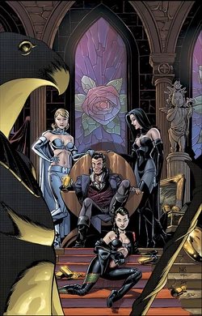
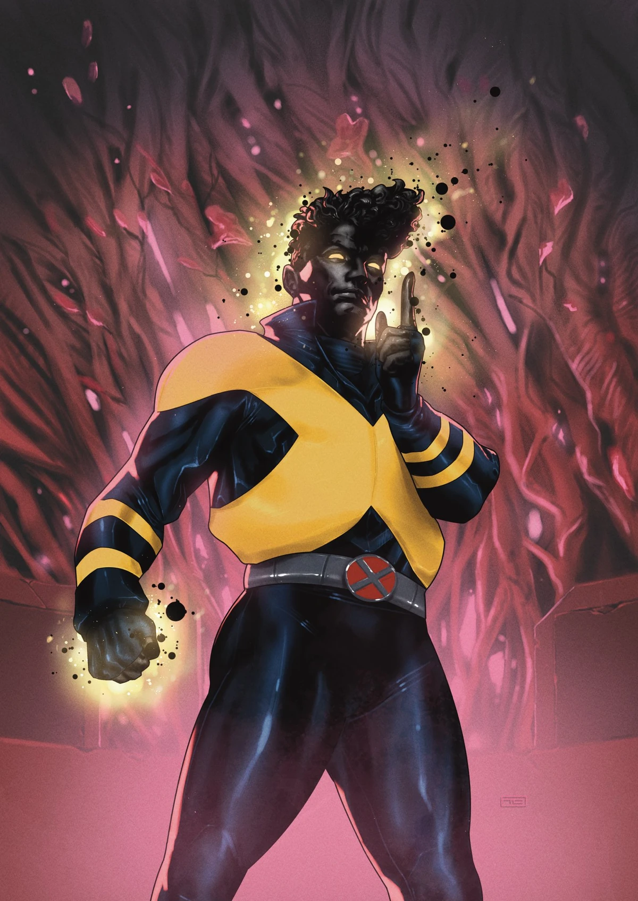
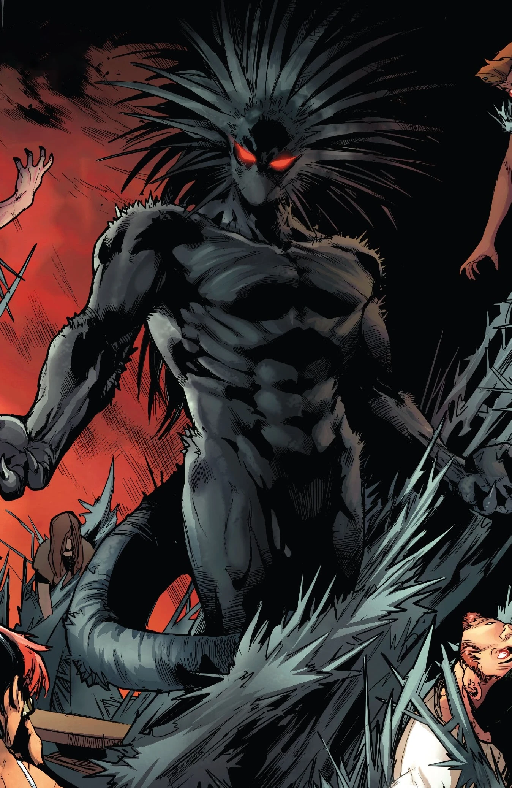
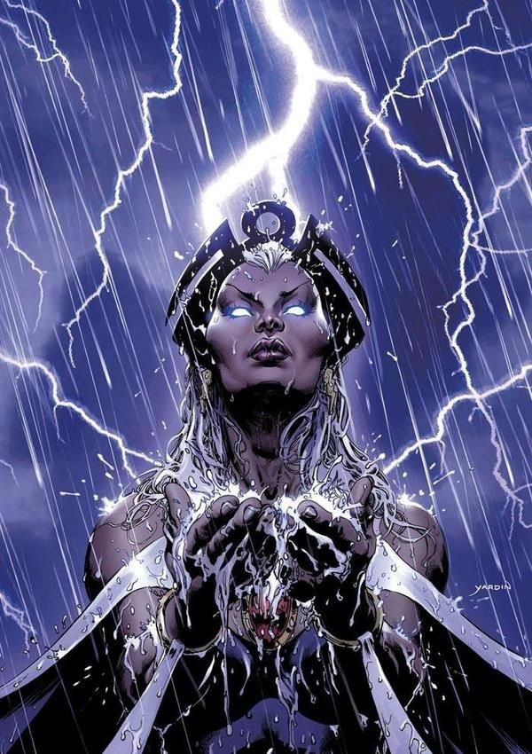
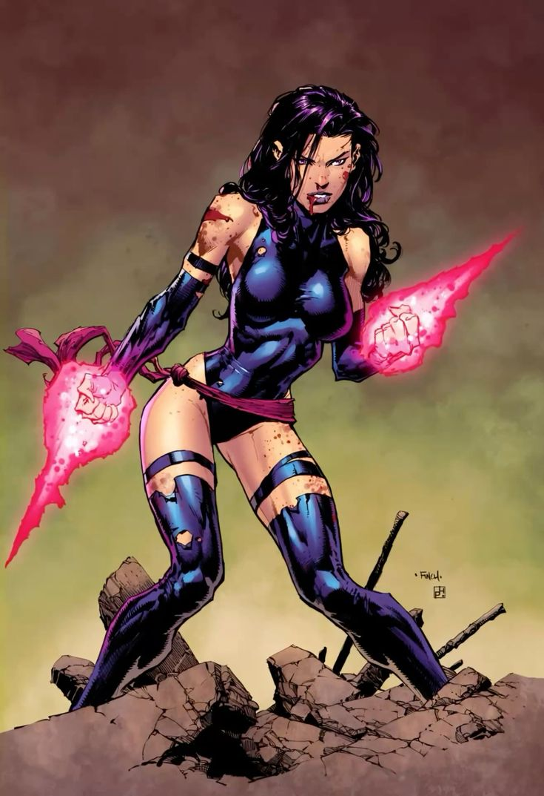
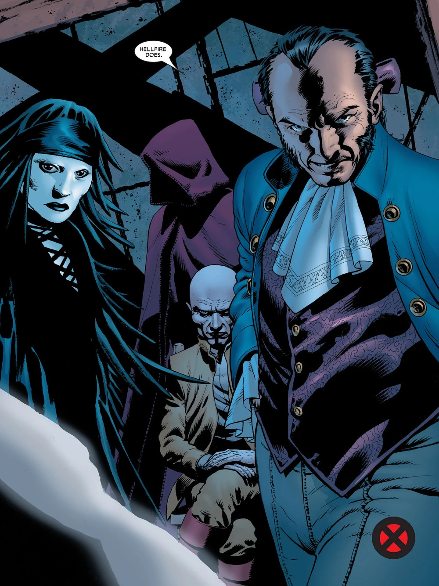

Le Club des Damnés

Le Club des Damnés :
Fondé par Francis Dashwood, la première itération du Club des Damnés débuta en Angleterre vers 1760 en tant que club social pour de riches personnes, sous le nom de l' « Ordre des Frères de Saint Francis de Wycombe ».
Le Club avait pour but de fournir à ses riches membres des plaisirs défiant souvent la morale de l'époque et aidait les membres à consolider leur influence économique et politique, même par le biais d'assassinats et de guerres.
Le Club fut dès le début dirigé par le Cercle Intérieur, un groupe secret dont les membres portaient des noms liés aux pièces d'échec : Rois Noir et Blanc, Reines Noire et Blanche, Fous Noir et Blanc, Tours Noire et Blanche, Cavaliers Noir et Blanc.
L'adhésion est héréditaire.
Au sommet de la hiérarchie se trouvent le Lord Impérial et ses Lords Cardinaux.
Quelques temps plus tard, une poignée de membres menée par Sir Patrick Clemens et Diana Knight émigra vers les colonies Américaines et créa une branche à New York City, au milieu du 19ème siècle.
Le Club s'installa à Philadelphia.
Durant la guerre d'indépendance, ils recrutèrent Lady Grey.
Ils souhaitèrent recruter le général Wallace Worthington qui avait réussi à remplacer Benedict Arnold.
Ils comptaient utiliser Elizabeth Shaw pour le séduire et l'attirer dans le Club.
Le Club comptait arrêter la révolution et apporter la victoire à la Grande-Bretagne.
Mais Worthington continua à rester loyal envers la cause.
Elizabeth tomba amoureuse de lui et décida qu'il était une cause perdue, et Worthington fut assassiné et sa maison incendiée.
En 1872, Anton Pierce rejoignit le Club et il fit don de la Randall House pour en faire leur QG officiel.
Le Club développa aussi des branches à Boston, Hong Kong, Londres, Los Angeles, Paris, Philadelphie et San Francisco.
Les diverses branches étaient supervisées par le Lord Impérial.
Jusqu'à sa mort, c'est Sir Gordon Phillips qui tint ce titre.
Il n'était pas membre du Cercle Intérieur, car son titre était supérieur.
Le but du Club des Damnés est d'obtenir et conserver le pouvoir à travers des jeux politiques et économiques.
Depuis sa fondation, le Club a été impliqué dans des guerres et des assassinats pour aider à placer certains membres à des positions importantes grâce à un réseau apparaissant comme un club social de gentlemen.
La carte de membre, une fois obtenue, se transmet par héritage afin de conserver les familles influentes en son sein.
Par exemple, Tony Stark, Betsy Braddock et son frère Brian, ou encore Warren Worthington III ont hérité de leurs famille d'une carte de membre, même s'ils jugent ce club démodé.
Alors que certains acceptent l'invitation de rejoindre le Club pour les plaisirs qu'il offre, d'autres cherchent des moyens d'acquérir plus d'argent.
L'intrigue constante, le chantage et le lobbyisme qui parcoururent le Club des Damnés résulta en de nombreux changements au sein du Cercle Intérieur, à cause des ambitions démesurées et des rivalités.
La structure du Club n'a pourtant que très peu changé au fil du temps.
La branche de New-York :
A l'insu de la plupart des membres du Club, l'organisation était dirigée par un Conseil.
Ce groupe secret avait des noms basés sur des pièces d'échec.
A l'origine, le Conseil était composé de membres humains, mais avec le temps, ils furent peu à peu remplacés par des mutants s'étant infiltrés dans les hautes sphères.
Des Chevaliers Rouges, soldats armurés, assuraient les missions difficiles.
Ned Buckman offrit le support du Conseil à Stephen Lang et ses Sentinelles chasseuses de mutants.
Cette alliance se révéla être un désastre, et une attaque de Sentinelles sur la maison de Sebastian Shaw mena à la mort de sa fiancée Lourdes Chantel.
Décidés à se venger, Shaw et Emma Frost massacrèrent le Conseil.
Ils le reformèrent sous le nom du Cercle Intérieur et s'entourèrent d'autres mutants, mais seulement des êtres exceptionnels (par leur carrière).
Le Club des Damnés rencontra les X-Men quand leurs agents visèrent les mutantes Kitty Pryde et Dazzler, kidnappèrent certains membres et s'emparèrent de l'esprit du Phénix.
Bien que les X-Men aient stoppé les plans du Cercle Intérieur, le mal était fait, et il donna naissance au Phénix Noir.
Parmi les membres les plus connus ayant appartenu au Club des Damnés, on peut compter :











